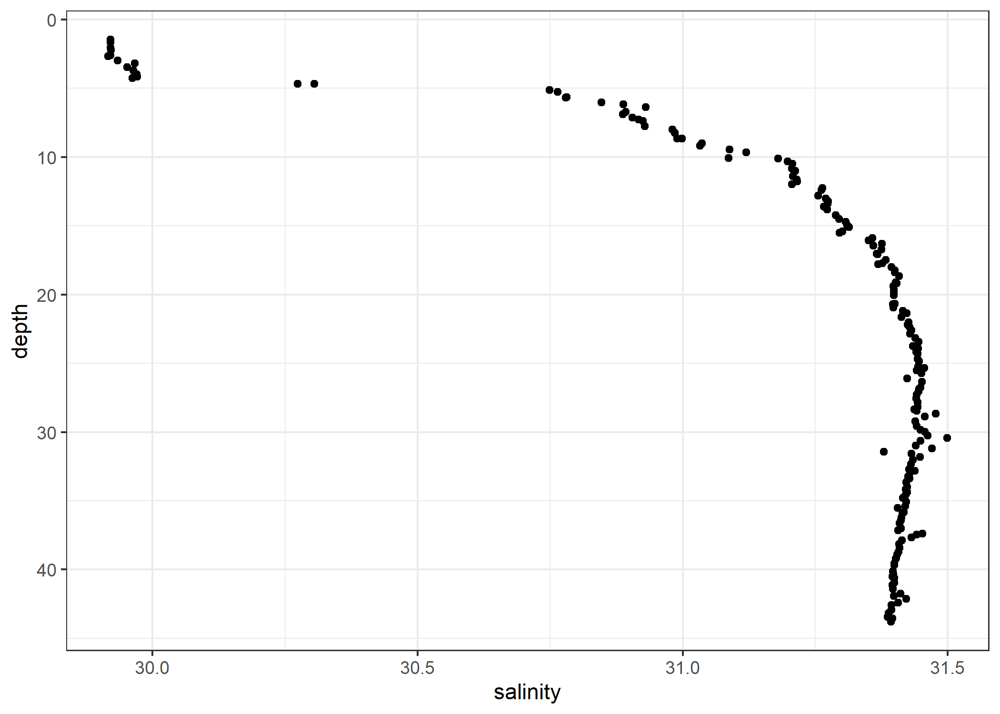

The goal of ggoce is to provide a minimal set of ggplot2 components to make publication-quality plots of oce objects. It is currently under initial proof-of-concept development and should be used for entertainment purposes only.
Installation
You can install the development version from GitHub with:
# install.packages("remotes")
remotes::install_github("paleolimbot/ggoce")Example
The ggoce package lets you pass ‘oce’ objects into ggplot2 functions as if they were data frames.
library(ggplot2)
library(ggoce)
theme_set(theme_oce())
data(ctd, package = "oce")
ggplot(ctd, aes(x = salinity, y = depth)) +
geom_point() +
scale_y_reverse()
You can see the actual data frames that are generated by calling the fortify() methods directly. The fortify() methods are defined are for “ctd”, “section”, and “adp” objects.
data(ctd, package = "oce")
data(section, package = "oce")
data(adp, package = "oce")
fortify(ctd)
#> # A tibble: 181 x 31
#> pressureType deploymentType waterDepth model type hexfilename serialNumber
#> <chr> <chr> <lgl> <chr> <chr> <chr> <chr>
#> 1 sea unknown NA 25 SBE "c:\\seasoft~ ""
#> 2 sea unknown NA 25 SBE "c:\\seasoft~ ""
#> 3 sea unknown NA 25 SBE "c:\\seasoft~ ""
#> 4 sea unknown NA 25 SBE "c:\\seasoft~ ""
#> 5 sea unknown NA 25 SBE "c:\\seasoft~ ""
#> 6 sea unknown NA 25 SBE "c:\\seasoft~ ""
#> 7 sea unknown NA 25 SBE "c:\\seasoft~ ""
#> 8 sea unknown NA 25 SBE "c:\\seasoft~ ""
#> 9 sea unknown NA 25 SBE "c:\\seasoft~ ""
#> 10 sea unknown NA 25 SBE "c:\\seasoft~ ""
#> # ... with 171 more rows, and 24 more variables: serialNumberTemperature <chr>,
#> # serialNumberConductivity <chr>, systemUploadTime <dttm>, ship <chr>,
#> # scientist <chr>, institute <chr>, address <chr>, cruise <chr>,
#> # station <chr>, date <dttm>, startTime <dttm>, recoveryTime <lgl>,
#> # latitude <dbl>, longitude <dbl>, sampleInterval <dbl>,
#> # sampleIntervalUnits <chr>, filename <chr>, scan <int>, timeS <dbl>,
#> # pressure <dbl>, depth <dbl>, temperature <dbl>, salinity <dbl>, flag <dbl>
fortify(section)
#> # A tibble: 2,841 x 14
#> stationId longitude latitude time distance pressure
#> <chr> <dbl> <dbl> <dttm> <dbl> <dbl>
#> 1 3 -8.53 36.9 1993-09-23 22:22:00 0 8.4
#> 2 3 -8.53 36.9 1993-09-23 22:22:00 0 48.3
#> 3 3 -8.53 36.9 1993-09-23 22:22:00 0 97.8
#> 4 3 -8.53 36.9 1993-09-23 22:22:00 0 148.
#> 5 3 -8.53 36.9 1993-09-23 22:22:00 0 178.
#> 6 4 -8.62 36.7 1993-09-24 00:13:00 19.3 10.2
#> 7 4 -8.62 36.7 1993-09-24 00:13:00 19.3 50.5
#> 8 4 -8.62 36.7 1993-09-24 00:13:00 19.3 104.
#> 9 4 -8.62 36.7 1993-09-24 00:13:00 19.3 152.
#> 10 4 -8.62 36.7 1993-09-24 00:13:00 19.3 203
#> # ... with 2,831 more rows, and 8 more variables: temperature <dbl>,
#> # salinity <dbl>, salinityBottle <dbl>, oxygen <dbl>, silicate <dbl>,
#> # nitrite <dbl>, NO2+NO3 <dbl>, phosphate <dbl>
fortify(adp)
#> # A tibble: 8,400 x 7
#> time distance beam v q a g
#> <dttm> <dbl> <fct> <dbl> <raw> <raw> <raw>
#> 1 2008-06-26 00:00:00 2.23 east -0.120 6c 99 64
#> 2 2008-06-26 01:00:00 2.23 east -0.0993 6a 9d 64
#> 3 2008-06-26 02:00:00 2.23 east 0.102 6b 9f 64
#> 4 2008-06-26 03:00:00 2.23 east 0.0961 5f 87 64
#> 5 2008-06-26 04:00:00 2.23 east 0.244 5c 8a 64
#> 6 2008-06-26 05:00:00 2.23 east 0.289 72 99 64
#> 7 2008-06-26 06:00:00 2.23 east 0.411 62 9c 64
#> 8 2008-06-26 07:00:00 2.23 east 0.320 6e 96 64
#> 9 2008-06-26 08:00:00 2.23 east 0.0717 70 91 64
#> 10 2008-06-26 09:00:00 2.23 east -0.0901 6b 91 64
#> # ... with 8,390 more rowsFor “section” and “adp” objects, there is more than one data frame one might want to plot. To obtain these tables, call fortify() directly and use the which argument:
fortify(section, which = "metadata")
#> # A tibble: 124 x 5
#> stationId longitude latitude time distance
#> <chr> <dbl> <dbl> <dttm> <dbl>
#> 1 3 -8.53 36.9 1993-09-23 22:22:00 0
#> 2 4 -8.62 36.7 1993-09-24 00:13:00 19.3
#> 3 6 -8.74 36.5 1993-09-24 04:19:00 42.0
#> 4 7 -8.79 36.4 1993-09-24 07:10:00 55.4
#> 5 8 -8.90 36.2 1993-09-24 10:22:00 77.1
#> 6 9 -9.27 36.2 1993-09-24 14:50:00 97.4
#> 7 10 -9.88 36.2 1993-09-24 20:41:00 141.
#> 8 12 -11.1 36.3 1993-09-25 09:51:00 237.
#> 9 13 -11.7 36.3 1993-09-25 14:53:00 288.
#> 10 14 -12.3 36.3 1993-09-25 20:11:00 341.
#> # ... with 114 more rows
fortify(section, which = "data")
#> # A tibble: 2,841 x 9
#> pressure temperature salinity salinityBottle oxygen silicate nitrite
#> <dbl> <dbl> <dbl> <dbl> <dbl> <dbl> <dbl>
#> 1 8.4 16.5 36.1 36.1 253 0 0.04
#> 2 48.3 14.9 36.1 36.1 215. 3.33 0.08
#> 3 97.8 14.0 36.0 36.0 193. 6.23 0.14
#> 4 148. 13.6 35.9 35.9 204. 5.67 0.06
#> 5 178. 13.0 35.8 35.8 208. 5.8 0.01
#> 6 10.2 17.7 36.2 36.2 248. 1.34 0.04
#> 7 50.5 16.2 36.1 36.1 251. 1.5 0.11
#> 8 104. 14.6 36.1 36.1 219. 3.56 0.01
#> 9 152. 14.1 36.0 36.0 214. 4.29 0.01
#> 10 203 13.6 35.9 35.9 213 5.05 0.01
#> # ... with 2,831 more rows, and 2 more variables: NO2+NO3 <dbl>,
#> # phosphate <dbl>
fortify(section, which = "combined")
#> # A tibble: 2,841 x 14
#> stationId longitude latitude time distance pressure
#> <chr> <dbl> <dbl> <dttm> <dbl> <dbl>
#> 1 3 -8.53 36.9 1993-09-23 22:22:00 0 8.4
#> 2 3 -8.53 36.9 1993-09-23 22:22:00 0 48.3
#> 3 3 -8.53 36.9 1993-09-23 22:22:00 0 97.8
#> 4 3 -8.53 36.9 1993-09-23 22:22:00 0 148.
#> 5 3 -8.53 36.9 1993-09-23 22:22:00 0 178.
#> 6 4 -8.62 36.7 1993-09-24 00:13:00 19.3 10.2
#> 7 4 -8.62 36.7 1993-09-24 00:13:00 19.3 50.5
#> 8 4 -8.62 36.7 1993-09-24 00:13:00 19.3 104.
#> 9 4 -8.62 36.7 1993-09-24 00:13:00 19.3 152.
#> 10 4 -8.62 36.7 1993-09-24 00:13:00 19.3 203
#> # ... with 2,831 more rows, and 8 more variables: temperature <dbl>,
#> # salinity <dbl>, salinityBottle <dbl>, oxygen <dbl>, silicate <dbl>,
#> # nitrite <dbl>, NO2+NO3 <dbl>, phosphate <dbl>
fortify(adp, which = "metadata")
#> # A tibble: 25 x 24
#> time pressure temperature salinity depth soundSpeed heading
#> <dttm> <dbl> <dbl> <int> <dbl> <int> <dbl>
#> 1 2008-06-26 00:00:00 40.0 3.82 35 39.7 1467 295.
#> 2 2008-06-26 01:00:00 40.1 3.64 35 39.8 1466 295.
#> 3 2008-06-26 02:00:00 40.0 3.63 35 39.8 1466 295.
#> 4 2008-06-26 03:00:00 39.4 3.79 35 39.2 1466 295.
#> 5 2008-06-26 04:00:00 39.1 3.86 35 38.8 1467 276.
#> 6 2008-06-26 05:00:00 38.6 3.45 35 38.3 1465 276.
#> 7 2008-06-26 06:00:00 38.2 3.83 35 37.9 1467 275.
#> 8 2008-06-26 07:00:00 37.9 3.65 35 37.6 1466 275.
#> 9 2008-06-26 08:00:00 38.0 3.66 35 37.8 1466 275.
#> 10 2008-06-26 09:00:00 38.4 3.64 35 38.1 1466 275.
#> # ... with 15 more rows, and 17 more variables: pitch <dbl>, roll <dbl>,
#> # headingStd <dbl>, pitchStd <dbl>, rollStd <dbl>, pressureStd <int>,
#> # xmitCurrent <dbl>, xmitVoltage <dbl>, ambientTemp <dbl>,
#> # pressurePlus <dbl>, pressureMinus <dbl>, attitudeTemp <dbl>,
#> # attitude <dbl>, contaminationSensor <dbl>, orientation <chr>,
#> # ensembleNumber <dbl>, ensembleInFile <int>
fortify(adp, which = "bottom_track")
#> # A tibble: 100 x 2
#> time beam
#> <dttm> <fct>
#> 1 2008-06-26 00:00:00 east
#> 2 2008-06-26 01:00:00 east
#> 3 2008-06-26 02:00:00 east
#> 4 2008-06-26 03:00:00 east
#> 5 2008-06-26 04:00:00 east
#> 6 2008-06-26 05:00:00 east
#> 7 2008-06-26 06:00:00 east
#> 8 2008-06-26 07:00:00 east
#> 9 2008-06-26 08:00:00 east
#> 10 2008-06-26 09:00:00 east
#> # ... with 90 more rows
fortify(adp, which = "velocity")
#> # A tibble: 8,400 x 7
#> time distance beam v q a g
#> <dttm> <dbl> <fct> <dbl> <raw> <raw> <raw>
#> 1 2008-06-26 00:00:00 2.23 east -0.120 6c 99 64
#> 2 2008-06-26 01:00:00 2.23 east -0.0993 6a 9d 64
#> 3 2008-06-26 02:00:00 2.23 east 0.102 6b 9f 64
#> 4 2008-06-26 03:00:00 2.23 east 0.0961 5f 87 64
#> 5 2008-06-26 04:00:00 2.23 east 0.244 5c 8a 64
#> 6 2008-06-26 05:00:00 2.23 east 0.289 72 99 64
#> 7 2008-06-26 06:00:00 2.23 east 0.411 62 9c 64
#> 8 2008-06-26 07:00:00 2.23 east 0.320 6e 96 64
#> 9 2008-06-26 08:00:00 2.23 east 0.0717 70 91 64
#> 10 2008-06-26 09:00:00 2.23 east -0.0901 6b 91 64
#> # ... with 8,390 more rowsThe default methods for each of these are called when you pass it to ggplot() and are chosen such that the variables you probably want to use are available:
ggplot(section, aes(distance, pressure)) +
geom_point(aes(col = temperature)) +
scale_y_reverse() +
scale_colour_viridis_b()
ggplot(adp, aes(time, distance, fill = v)) +
geom_raster() +
facet_grid(vars(beam)) +
scale_fill_gradient2(limits = function(x) c(-max(abs(x)), max(abs(x)))) +
coord_cartesian(expand = FALSE)
TS plots
The ggoce package provides geom_isopycnal() to support creating standard temperture/salinity diagrams.
ggplot(
ctd,
aes(
x = salinity,
y = oce::swTheta(
salinity,
temperature,
pressure
)
)
) +
geom_isopycnal() +
geom_point() +
labs(
x = "Practical salinity",
y = "Potential Temperature (°C)"
)